B-C · Modèles et backtest
Rolling-origin sur 365 jours de livraison (1er juillet 2025 → 30 juin 2026), prévision émise chaque veille à 9 h, précédés de 181 jours de validation (janvier-juin 2025) qui servent au router et à la calibration conforme. Commandes : flexgrid forecast <famille> <modèles>, puis flexgrid score national segments. Les nombres viennent de results/summary_national.csv et results/verdicts_national.csv.
La réponse en une phrase (national)
Nos meilleurs modèles battent nettement la prévision J-1 publiée par RTE : le mélange LightGBM + Chronos-2 a un MAE de 897 MW contre 1 400 MW (ratio 0,64, IC 95 % [0,56 ; 0,73]), sous les deux lectures du quart d’heure, avec une couverture 90 % de 0,86, dans la bande pré-enregistrée. Mais une correction de biais d’une ligne appliquée à RTE fait mieux que tous nos modèles : 816 MW. Contre elle, le mélange ne montre « pas de différence » (1,10 [0,99 ; 1,22]) sous la lecture pré-enregistrée, et perd sous la lecture favorable à RTE (1,14 [1,02 ; 1,26]).
Le critère du brief, « battre la prévision J-1 de RTE », est donc rempli au sens littéral et ne l’est pas au sens utile. Le sens utile est le seul qui compte pour un BRP : il peut corriger RTE lui-même. Sur le national, la valeur démontrable de nos modèles ne vient pas de la précision ponctuelle, elle vient de : - l’été, où le mélange bat RTE débiaisée (592 MW contre 706 MW de juillet à octobre) ; - les quantiles, que RTE ne publie pas ; - le portefeuille, où RTE n’existe pas (section suivante).
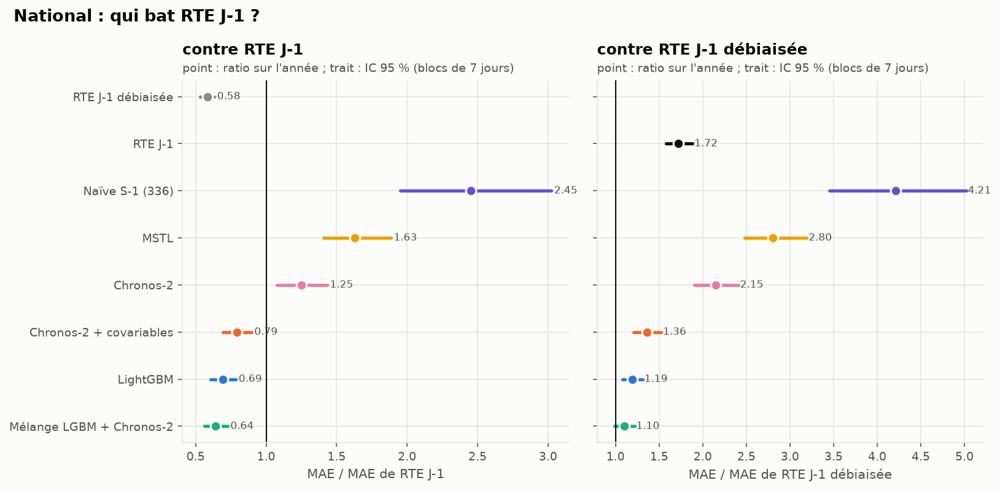
Ce que montre chaque figure
L’erreur selon l’heure
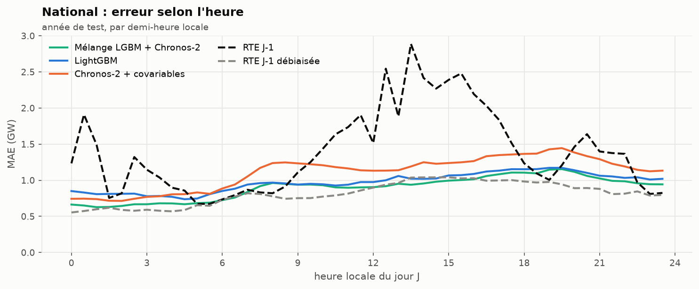
La prévision RTE brute (tirets noirs) a la signature de son biais : des pics à 00:30, 12:30-13:30 et un plateau l’après-midi, ceux vus au bloc A. Débiaisée (tirets gris), elle est la meilleure courbe de 7 h à 13 h, quand les usages tertiaires démarrent. Nos modèles ne voient la conso nationale que jusqu’à 8 h la veille ; RTE, elle, révise sa prévision plus tard et avec sa propre télémesure (SPEC, angle mort 5). La nuit, le mélange fait jeu égal.
Mois par mois
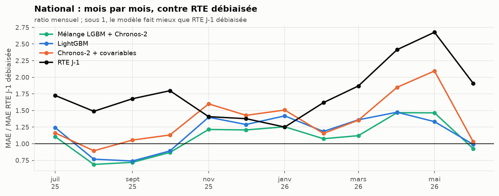
Sous 1, le modèle fait mieux que RTE débiaisée. Le mélange gagne d’août à octobre et en juin, perd tout l’hiver et au printemps. Sur l’année, il fait mieux qu’elle un jour sur deux (50,7 % des jours) mais perd en moyenne : ses mauvais jours sont des jours d’hiver, où les erreurs se comptent en GW. L’hiver est la saison où une erreur de température coûte le plus (2 à 3 GW par degré en France) ; c’est aussi celle où l’information fraîche de RTE vaut le plus. En avril-mai, RTE brute se dégrade (ratio 2,7) : son biais augmente, et la correction glissante sur 28 jours le suit.
Par type de jour
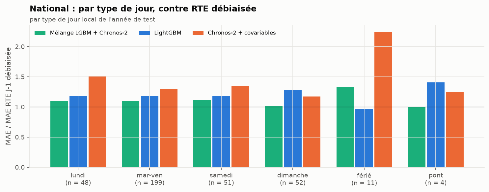
Chronos-2, même informé des fériés par une covariable, se trompe lourdement les jours fériés (ratio 2,25 contre RTE débiaisée, n = 11). LightGBM, qui a vu dix ans de fériés dans son apprentissage, est le seul à faire jeu égal ces jours-là (0,97). Le jour de Noël ci-dessous le montre : Chronos-2 prévoit presque un jeudi ordinaire.
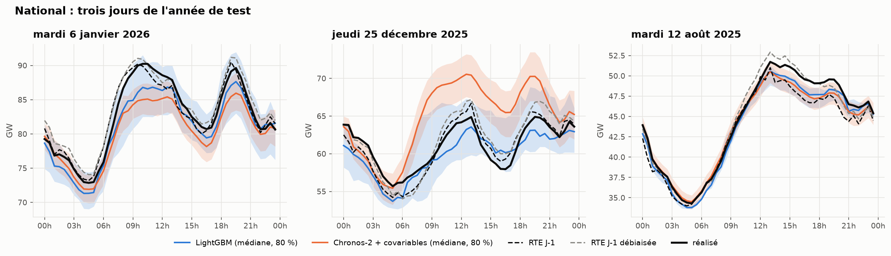
Les intervalles
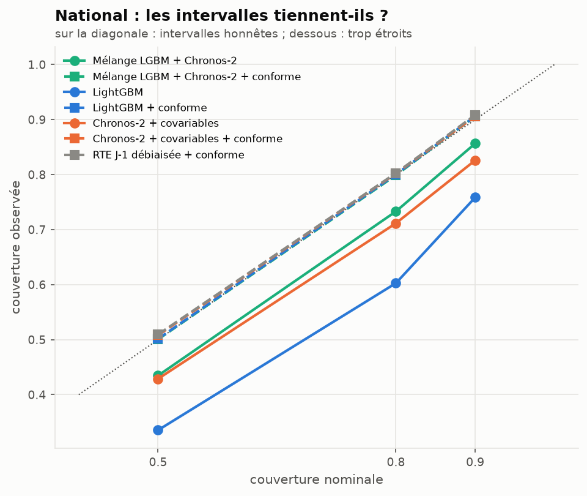
- LightGBM brut est trop sûr de lui : son intervalle 90 % ne couvre que 76 % des pas. L’angle mort 7 du SPEC annonçait un décalage train/serve (appris sur météo observée, utilisé sur météo prévue). Le décalage existe, mais il n’explique pas tout : avec la météo observée en entrée, la couverture n’est que de 77 %. L’essentiel vient de la régression quantile elle-même, qui s’ajuste trop bien à ses données d’apprentissage.
- Le mélange couvre 86 % (dans la bande), Chronos-2 avec covariables 83 %.
- La réparation conforme (médiane conservée, quantiles reconstruits sur les erreurs des 56 derniers jours) ramène tous les modèles à 0,906-0,908. Appliquée à RTE débiaisée, elle donne la meilleure pinball loss du national (238 MW contre 267 pour le mélange) : sur le national, même la prévision probabiliste la plus utile est une RTE corrigée.
La météo parfaite n’aurait presque rien changé
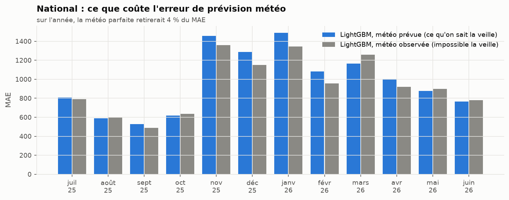
Les mêmes modèles LightGBM, nourris avec la météo observée au lieu de la météo prévue 48 h avant, ne gagnent que 4 % de MAE (933 contre 972 MW). L’erreur de prévision météo n’est donc pas ce qui sépare nos modèles de RTE. Ce qui les sépare, c’est l’information sur la conso elle-même : à quelle heure on la connaît, et à quel niveau de détail.
Les autres modèles
| Modèle | MAE (MW) | MAPE | MASE | couverture 90 % |
|---|---|---|---|---|
| RTE J-1 débiaisée | 816 | 1,61 % | 0,233 | (ponctuelle) |
| Mélange LightGBM + Chronos-2 | 897 | 1,73 % | 0,256 | 0,857 |
| LightGBM | 972 | 1,87 % | 0,277 | 0,758 |
| Chronos-2 + covariables | 1 109 | 2,15 % | 0,316 | 0,826 |
| RTE J-1 publiée | 1 401 | 2,79 % | 0,399 | (ponctuelle) |
| Chronos-2 sans covariables | 1 752 | 3,33 % | 0,499 | 0,811 |
| MSTL | 2 284 | 4,47 % | 0,651 | 0,786 |
| Naïve J-1, naïve S-1, ETS saisonnier | 3 430-3 493 | 6,4-7,1 % | 0,98-1,00 | 0,70-0,88 |
- Les covariables comptent plus que le modèle : Chronos-2 passe de 1 752 à 1 109 MW quand on lui donne la météo et le calendrier. Zero-shot sans covariables, un TSFM ne sait pas qu’il va faire froid demain.
- MSTL et ETS ne font pas mieux que la naïve d’un facteur 2. Sans météo, un modèle univarié ne peut pas suivre un hiver.
- Le mélange bat ses deux membres. LightGBM et Chronos-2 se trompent à des moments différents ; la moyenne des quantiles réduit le MAE de 8 % par rapport au meilleur des deux.
Le portefeuille FlexGrid
Nombres : results/summary_portfolio.csv, results/verdicts_portfolio.csv, results/summary_panel.csv.
La réponse en une phrase (portefeuille)
Sur le portefeuille (3 517 sites tertiaires, ~93 MW en moyenne), le mélange a un MAPE de 2,72 %, contre 5,59 % pour la prévision de RTE ramenée au portefeuille et 7,55 % pour la naïve hebdomadaire. Son MAE vaut 0,49 fois celui de RTE au prorata (IC 95 % [0,44 ; 0,54]) et 0,36 fois celui de la naïve ([0,32 ; 0,40]), avec une couverture 90 % de 0,85 dans la bande.
Ici, contrairement au national, il n’y a pas de RTE débiaisée qui tienne : RTE ne prévoit pas le portefeuille. Le meilleur raccourci d’un BRP sans modèle, « RTE J-1 × la part récente du portefeuille, par demi-heure » (ajouté après le protocole, voir les notes d’implémentation), fait 5,6 % : c’est presque exactement les 6 % du brief. Le MAPE de 6 % décrit dans le brief est donc celui d’une méthode sans modèle, et un modèle le divise par deux.

Pourquoi l’écart est-il bien plus grand ici que sur le national ? Le portefeuille ne ressemble pas à la France : pic de bureau, dimanche plat, climatisation (bloc A). Une prévision nationale, même mise à l’échelle par demi-heure, porte la forme du national. Et l’information fraîche de RTE ne vaut rien pour ces 3 517 sites-là.
L’erreur selon l’heure
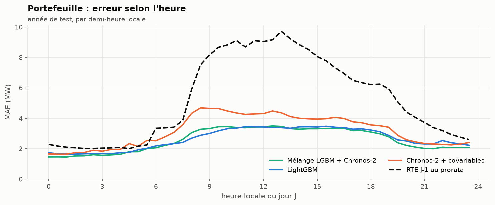
RTE au prorata se trompe surtout aux heures ouvrées (8 h-19 h), là où le profil tertiaire s’écarte le plus du profil national. Nos modèles ont une erreur presque plate le jour, autour de 3,5 MW.
Mois par mois, et par type de jour
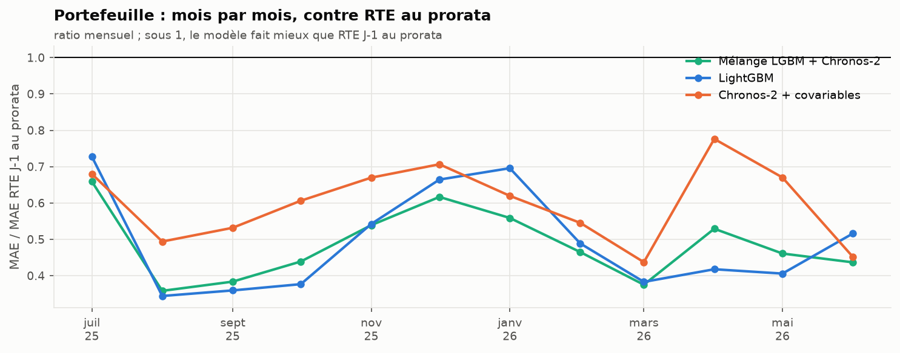
Le mélange bat RTE au prorata tous les mois (et 86 % des jours). L’hiver reste la saison difficile en valeur absolue (MAE de 3,38 MW de décembre à février contre 2,05 MW en juillet-août), mais l’avantage relatif ne disparaît pas comme sur le national.
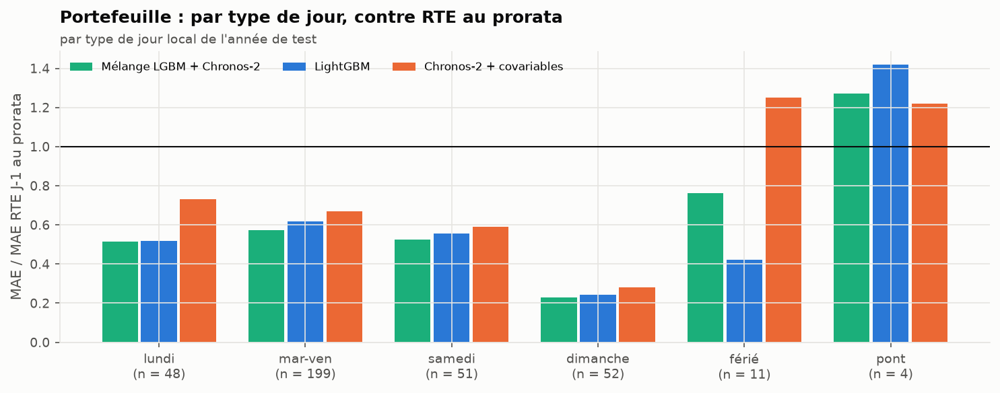
Les jours fériés (n = 11) et les ponts (n = 4) sont les seuls où l’un de ces trois modèles perd. Sur les ponts, tous perdent contre RTE au prorata : un pont dans le tertiaire, c’est la moitié des bureaux fermés, ce qu’aucune variable du calendrier ne mesure bien. Sur les fériés, LightGBM (0,42) fait bien mieux que Chronos-2 (1,25), comme sur le national. Noël le montre :
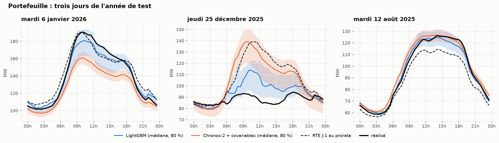
Le 25 décembre, Chronos-2 et RTE au prorata prévoient une journée de travail (MAE de 19 MW). LightGBM sait que c’est férié (8 MW) ; le mélange, qui moyenne les deux, est entre les deux (14 MW). Le mélange hérite des erreurs de Chronos-2 les jours fériés : une règle « LightGBM seul les jours fériés » serait un gain facile, non pré-enregistré, donc pas appliqué ici.
Les intervalles
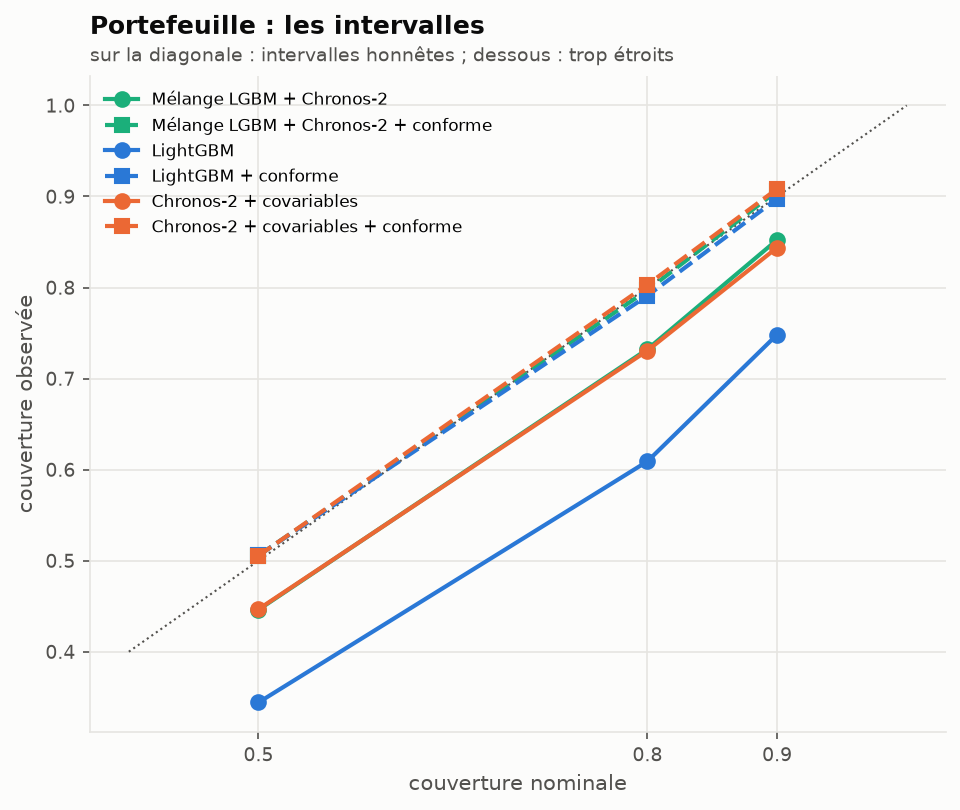
Même diagnostic qu’au national : LightGBM couvre 75 % au lieu de 90 % (76 % au national), le mélange 85 %, Chronos-2 + covariables 84 %. La réparation conforme ramène tous les modèles à 0,90-0,91. Mois par mois, la couverture réparée du mélange descend à 0,78 en novembre : la fenêtre de 56 jours suit l’arrivée de l’hiver avec retard.
La météo parfaite
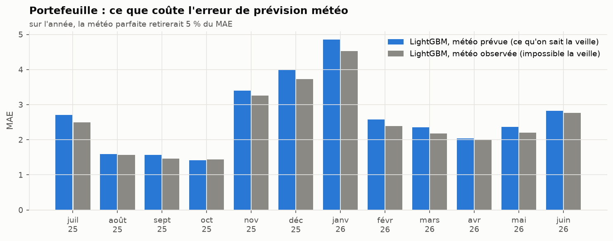
Même conclusion qu’au national : la météo observée ne retire que 5 % du MAE. En MW, le gain est le plus grand en hiver ; en proportion, il est du même ordre (6 à 8 %) en hiver, au printemps et en juillet.
Le panel : LightGBM ou Chronos-2, segment par segment
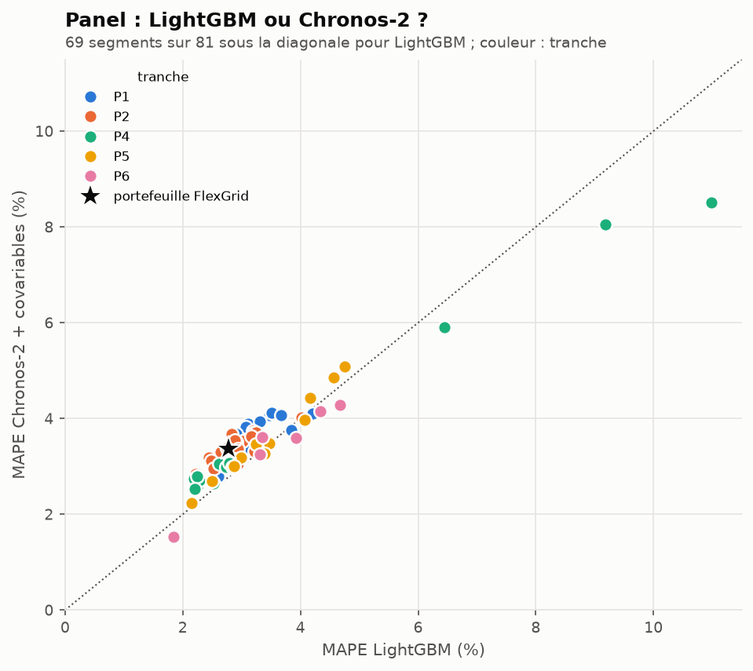
Sur les 81 segments du panel, LightGBM a un MAPE plus faible que Chronos-2 + covariables sur 69. Les exceptions ne sont pas au hasard : les trois segments P4 chauffés à l’électricité (84, 76, 93_P4_ENT1), les plus difficiles du panel (MAPE de 6 à 11 %), sont mieux prévus par Chronos-2. Le mélange fait mieux que LightGBM seul sur 72 segments sur 81. C’est la question du router (bloc 03) : y a-t-il des segments où il vaut mieux choisir un modèle plutôt que les mélanger ?
| Portefeuille, année de test | MAE (MW) | MAPE | MASE | couverture 90 % |
|---|---|---|---|---|
| Mélange LightGBM + Chronos-2 | 2,57 | 2,72 % | 0,371 | 0,852 |
| LightGBM | 2,64 | 2,78 % | 0,381 | 0,748 |
| Chronos-2 + covariables | 3,16 | 3,36 % | 0,457 | 0,844 |
| Chronos-2 sans covariables | 4,53 | 4,77 % | 0,654 | 0,875 |
| MSTL | 5,15 | 5,39 % | 0,743 | 0,955 |
| RTE J-1 au prorata | 5,28 | 5,59 % | 0,761 | (ponctuelle) |
| Naïve S-1 | 7,17 | 7,55 % | 1,035 | 0,866 |
| ETS saisonnier | 10,48 | 11,27 % | 1,513 | 0,832 |
| Naïve J-1 | 12,42 | 12,90 % | 1,794 | 0,874 |